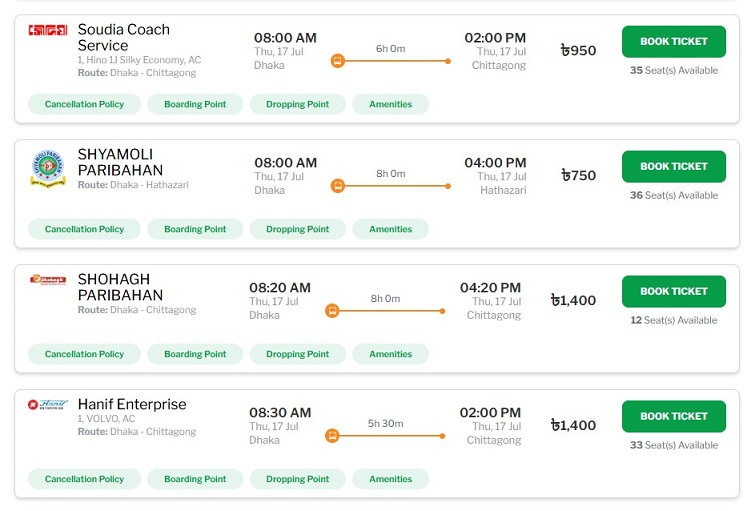

Building web applications with React JS
Prerequisite
Have a look at the How Web Pages Work article as a prerequisite to this article.
In traditional web development, for each web page, developers create a single large HTML file and links CSS and JavaScript to it. In this approach, it becomes harder to add new features and to fix bugs as the application becomes larger.
React framework promotes a modular development approach, meaning developing a web page in small components instead of a large single HTML file. Each component contains a part of the web page. React merges the components into a single HTML file before sending it to the user.
React components
Component is the most important React concept. A component is a JavaScript function that creates a part of a web page whenever it is called. Here follows how a basic React component function looks like:
import React from 'react';
function App() {
return (
<div>
<h1>Hello, World!</h1>
<p>This is a simple React component.</p>
</div>
);
}
export default App;
A component function returns JSX instead of HTML. JSX is an extension of HTML, which allows using JavaScript expression within HTML.
How React generates web pages with components
In a React project, we only define the component functions, but how does React generate HTML from them? It is documented in official React docs. Here follows a brief overview of how a web page is created by React from component:
- When a user requests for a web page, React finds out the respective component. This phase is called trigger.
- After a trigger, React generates the HTML string by calling the component function. This phase is called rendering.
- Then it adds the generated HTML portion into the HTML DOM using
appendChildso that it becomes visible in the HTML page. This phase is called commit. .
While rendering a component, if React finds out that it contains child components, it triggers their rendering too. Those components also go through the trigger, render, and commit phases.
Working with React components
General structure of a component
import React, { useState } from 'react';
function Counter() {
const [count, setCount] = useState(0);
let increment= () => {
setCount(count + 1)
}
return (
<div>
<p>You clicked {count} times</p>
<button onClick={increment()}>Click me</button>
</div>
);
}
Just as the preceding example shows, any React component generally has two parts. In the first part, the component function performs some declarations (e.g. state variables, event handler functions, etc.), and in the last part, it returns a JSX. Depending on situation, a component may have more variables and event handlers, and the JSX may be larger, but the general structure remains the same.
Note importantly that the component function doesn't modify any variables (props, state variables, or ref variables) in its body; it only declares the event handler functions that modify variables. A component function only prepares the component for rendering, variables can be modified only after the component is rendered.
Problem
Try modifying a prop or a state variable in the component function body, and see what happens.
Reusing components with props
We have already learned, React component functions produce parts of a web page. In many web pages, we often see repeated parts with different data. For example, in the following image, a bus ticket booking website displays a list of available buses in a list of cards. Each card is same in structure but contain different data for different buses.

For such scenarios, we need components whose parts are variable. In React it is done with parameterized components. Parameterized components define a parameter called props (short for properties). Callers of the component pass the variable parts as properties of the props parameter. Just as parameterized functions can be used for different inputs, components with props can also be used for different data. Such components are reusable, meaning a component is defined once and used many times with different data.
The following example shows how props are passed to components. Notice that parameters are passed to the Greetings component as attributes.
import React from 'react';
function Greeting(props) { // can be simplified with destructuring: ({ name })
return <h1>Hello, {props.name}!</h1>;
}
function App() {
return (
<div>
<Greeting name="Alice" />
<Greeting name="Bob" />
</div>
);
}
export default App;
Managing data in components
A component contains data too. A component broadly contains two kinds of data: first, data that require re-rendering when changed, and second, data that don't require a re-render when they are changed.
State variables
Some components start by displaying some initial value as data, and after that user interactions (e.g., clicks) may change the data. We want the updated value to be displayed in the UI. For example, a counter component displays 0 as its initial count, and each time a button is clicked, the count increments by 1. After each click, the component should show the updated count. Displaying the updated count requires re-rendering the component.
This cannot be achieved with ordinary JavaScript variables, because they do not trigger re-renders when their values change. In React, such data must be declared as state variables. State variables mean variables that trigger a re-render of the component when their values change.
In the following example, count is declared as a state variable. A state variable is declared by calling the useState hook function. The function takes the initial value of the variable as a parameter and returns a variable and a function for updating the variable.
import React, { useState } from 'react';
function Counter() {
const [count, setCount] = useState(0);
return (
<div>
<p>You clicked {count} times</p>
<button onClick={() => setCount(count + 1)}>
Click me
</button>
</div>
);
}
Ref variables
A component may also contain data that are not displayed. Their values may change with events, but the updated values don't need to be displayed. In other words, they do not trigger re-renders when their values change. Moreover, we want those data to be preserved after any re-render.
Ordinary JavaScript variables are not suitable for this purpose either, because they are lost after a re-render.
import React, { useRef } from 'react';
function Timer() {
const countRef = useRef(0);
const handleClick = () => {
countRef.current += 1;
console.log(`Button clicked ${countRef.current} times`);
};
return (
<div>
<button onClick={handleClick}>
Click me
</button>
</div>
);
}
Exercise
Try using an ordinary JavaScript variable instead of a Ref for the same purpose and see what happens.
Effects: re-rendering components without events
Notice that the general structure of components raises a question. If we want the component to re-render after some user event (e.g. click), it is simple: we define the change in an event handler. But sometimes we may need to re-render a component after a nonuser event.
Some components initialize only with props passed to it, but some also need external data. For example, a component has several state variables for displaying the details of a student. It receives a student id as a prop, then it has to fetch the student details from an API and update the state variables. Notice that these changes do not happen as a result of any event, like a click, so event handlers are not suitable here.
In React components, such changes have to be passed as a callback to useEffect function. React will execute the callback after rendering and committing the component. In other words, a component renders first with the default state variables. After that, the effect runs and sets the state variable values.
import React, { useState, useEffect } from 'react';
function StudentDetails({ id }) {
const [name, setName] = useState("");
const [roll, setRoll] = useState("");
useEffect(() => {
// call API with 'id' and update state variables: 'name' and 'roll'
}, []);
return (
<div>
<p>Name: {name}</p>
<p>Roll: {roll}</p>
</div>
);
}
Routing: navigating among components
A large web application consists of many web pages. Some process requires moving between multiple pages.
Some components are associated with specific URLs, allowing navigation between different views in a single-page application (SPA). React Router is a popular library for handling routing in React applications.
Registering a component in a router means this component will be available in this URL.
import React from 'react';
import { BrowserRouter as Router, Route, Switch } from 'react-router-dom';
function Home() {
return <h2>Home</h2>;
}
function About() {
return <h2>About</h2>;
}
function App() {
return (
<Router>
<Switch>
<Route path="/about" component={About} />
<Route path="/" component={Home} />
</Switch>
</Router>
);
}
export default App;
Client-side Rendering (CSR) and Server-side Rendering (SSR)
Generating HTML using JavaScript functions demo.
React workflow
Divide planned web pages into components and develop the components first. Then compose the components together.